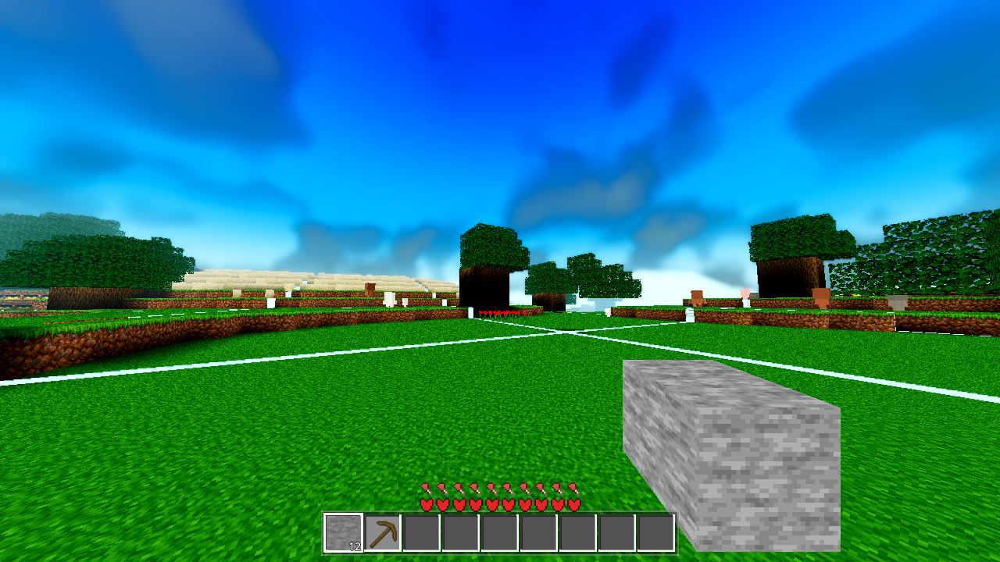

Builder: subagent. 2026-10-08 21:14–23:00 EDT. Tree at a4c953f (AC-0394) + one
other session's in-flight godot/* changes (main.gd / game.gd / debug.gd / drop.gd / chunk_lit_* / fluid_* /
satellite_body shaders) — all fenced files untouched by this task. Gates on the dirty tree; the render from a
clean worktree (a4c953f + this task's hunks only). No commits.
generate_resl(skip=1)) was solid
0..un-carved heightmap H; it now runs on the far payload's carved top — the value the far lane
already computes (Option (b) of the ticket, at zero added cost). The acceptance is the census re-run, measured
the same way the coordinator measured: the count of ring columns whose filled top stands above the carved
top goes 2,597 (1.63 %, max 91 blocks at (−91,147,−48)) → 0 (159,744/159,744 columns
with filled top equal to the carved top). Cost A/B (in-process): 0 µs per chunk. genhash:
0/25 columns moved (deliberate — the genhash window is the skip=0 full path; the standing reference is
already stale pre-fix, see §4). Light gates all green (G0×2, SMOKE, meshprobe, farab, ladder 20/20, one boundary
r4 self-check), each with rc=0 + 0/0 error census; the standing values that read off-band were
A/B'd against the pre-fix .so and are pre-existing stale bounds, not this change (§5). One
ground-level render at the user's fog ratio from the clean worktree (§7). No re-baseline, no toggle, no commit.The coordinator's instrument (.scratch/AC-0394/census_bandA.gd — fill top via
column_heights16 vs carved_tops, taxi 5..8 ring, anchors (0,0)/(6,−9)/(−11,4), seed 44,
H 384, sea 126, face 0, R 4000) re-run on the untouched tree + current .so
(.scratch/AC-0397/census-proxy-baseline.log):
BAND_A_CENSUS { "cols": 159744, "un_carved_above_carved_top": 2597, "rate_pct": 1.63,
"max_delta": 91, "max_col": [-91, 147, -48],
"per_taxi": { 5: 151, 6: 383, 7: 890, 8: 1173 } } # 0.49% → 2.39% outward
Reproduced exactly — the ticket's baseline numbers are the numbers of this build. The user-visible symptom: the 80–128 m draw tier (band A, the user's sim 4 / medium 8 pair) shows solid plateaus up to 91 blocks proud of the carved ground on every carved column of the ring, inside the fog.
Drive the fill from the resident far payload — do not re-derive. The payload H is the carved top
(AC-0387: the far lane runs the full path's per-column sequence; farab-gated, negative-tested), so driving from
it is driving from the carved top, at zero added generation cost. Rejected alternative: re-running
carved_top_pass inside the skip path — the AC-0387 price (~3,258 µs/chunk) on every materialization,
re-deriving bytes the lane already holds (the project's "never re-derive a value another lane computes").
| File | Change |
|---|---|
gdext/src/gen.cpp |
gen_flat gains an optional trailing p_pay (the 1024-byte payload). On the skip path:
he = payload H; the top row = the payload TOP id (a rule re-derivation would diverge on columns the
carve drops into the deepslate band — the re-skin rule has no deepslate branch); the water gate becomes the fill's
own top (the far emit's St rule — "a land column the carve drops below sea draws its water surface there", exactly
what the farab (2) reference synthesizes). The veg loop is untouched in logic: its in-column base already reads
heff, which is now the payload H — matching the far lane's veg (AC-0387). generate_resl binding +
D_METHOD gain the optional pay arg (ignored unless skip ≠ 0 and the size is exactly 1024 — an absent or
undersized payload keeps the legacy un-carved fill, never an error). File-header lane description updated in-task. |
godot/world/world.gd |
The band-A mat entry carries "far_pay": c.far_payload() (one 1 KB copy per dispatch — the same
pattern as the snap_rings neighbour calls in the same branch); the worker's mat branch passes it to
generate_resl (face 0 / R 4000 — the production defaults the payload was generated with). Comments
updated. The data lane's offscreen-interior skip=1 call (world.gd:6276) is deliberately not changed: those
columns are outside the render circle (never drawn as tier 1) and full-regenerate before any mesh — the legacy
fill there is invisible. |
godot/scenes/harness.gd |
Data-source sync only — no arm logic, branch, or assertion changed. Two arms model the production fill
shape: the ladder's far-race fallback reference and the farab (3b) codec round-trip vehicle now pass the payload
they already hold. Left stale they would model the pre-fix fill; the arms' ok verdicts are untouched. |
godot/world/AGENTS.md + godot/ARCHITECTURE.md |
The "skip=1 band-A fill stays un-carved" documentation is wrong by construction after this change — updated in the same task (invariant 2): the fill is payload-driven; the no-payload call keeps the legacy fill bit-for-bit (farab A/B reference + the data lane's offscreen interior). |
Binding-compat finding (measured, not assumed): godot-cpp's D_METHOD binding validates only the
minimum arg count and converts exactly the declared parameters — the old 9-arg binding accepts the new
10-arg call silently, ignoring the trailing payload. Verified on both .so builds (argcheck2):
a newer GDScript on a stale .so degrades to the legacy un-carved fill (the pre-fix shape) rather than
erroring; the old call shape on the new .so is byte-identical legacy. The call-shape change is
ABI-lenient in both directions.
Same ring, same anchors, same seed, same carved_tops reference — but now asked of the
actual fill: per column the instrument runs the worker's exact call (generate_resl skip=1,
with/without the payload), flattens the generated slabs, and reads the per-column SOLID top (topmost
non-air / non-water / non-veg cell) — .scratch/AC-0397/census_bandA2.gd.
| Run | Fill top above carved top | == carved top | max Δ | rc |
|---|---|---|---|---|
| Coordinator proxy (pre-fix baseline) | 2,597 / 159,744 (1.63 %) | — | 91 @ (−91,147,−48) | 0 |
| My instrument, legacy fill (pre-fix, negative test) | 2,597 / 159,744 (1.63 %) | 157,147 | 91 @ (−91,147,−48) | 0 |
| My instrument, payload-driven fill (post-fix) | 0 / 159,744 (0.00 %) | 159,744 (100 %) | 0 | 0 |
The legacy row proves the instrument reads the defect in the coordinator's terms (2,597, same max, same column — the RED half of the negative test); the post-fix row is the acceptance: no filled top stands above the carved top anywhere on the ring, and every column's filled top equals the carved top (the stronger identity). Per-taxi post-fix: 5/6/7/8 all 0 bad. The band-A surface is now the far emit's surface, column for column.
| Comparison | Moved |
|---|---|
Pre-edit baseline (current tree + AC-0403 .so) vs post-edit (this change) |
0/25 — 25/25 byte-identical (standalone arm + the SMOKE battery's genhash) |
Pre-edit baseline vs the standing reference (.scratch/AC-0367-gates/genhash_pristine_r1.log) |
0/25 — measured before any edit on the untouched tree |
The 0/25 movement of this change is deliberate and structural: genhash hashes WorldGen.generate =
generate_flat(skip=0) over the taxi ≤ 2 window — the full path, which this change does not touch
(p_pay is ignored when skip=0). The census, not genhash, is the proof of the move. The standing
reference's staleness is the AC-0403 §8 finding, re-confirmed on this tree (post-AC-0367 world drift —
AC-0384 r5–r8, AC-0388, AC-0398, AC-0399, …). Per the instruction: the reference's actual state was established
before concluding anything, and the movement is reported as a deliberate, attributed delta — not re-based,
not chased. The reference set should be re-recorded at closeout (coordinator's call).
rc=0 + gate_census.py 0 SCRIPT / 0 SHADER ERROR)| Gate | Result | rc | Notes |
|---|---|---|---|
| G0 ×2 | 0/0 both | 0 / 0 | Paired check per AC-0403: clean census and exit status (the stochastic UAF leaves a clean log with a signal-11 exit; two clean boots taken for coverage). |
SMOKE player;interact;light;fluids;genhash | ok:true | 0 | All arms at standing values (drop_spawned/place_ok TRUE — the AC-0403 stale-false is no
longer present on this tree). Battery genhash 25/25 == baseline. |
| PROBE (meshprobe) | match_rate 1.0, ok | 0 | Standing invariant. |
| farab | ok, h_mismatch 0, slab_mismatch 0/0, mat_surf_diff 0, codec ok | 0 | A/B vs pre-fix .so: RESULT bit-identical (every field). The §3 standing values that read
off-band (water_slabs 6/7/28 vs listed 4/5/20; far_bytes 127 vs listed 198) are
pre-existing stale bounds — the baseline .so produces the same numbers (AC-0408 protocol:
mechanism + A/B flat → stale bound; flagged, not re-based). |
| ladder (the band-A arm) | band_a_ok 20/20, ok:true | 0 | The materialization identity now holds universally (it was the natural negative test — red pre-fix on
any carved band-A column). A/B vs pre-fix .so: RESULT bit-identical (band_a 20/20 on both — the
ladder world's 20 ring columns have no active carve). The off-band §3 values (B 144/155, C 90/94, flip 90/94,
sky_mixed 46/72, ms_h 2144/1888) are pre-existing stale bounds by the same A/B. |
| boundary r4 (the builder's ONE permitted self-check) | ok:true | 0 | crossing_frame p95 38 ms (drift band 35–55), fence fields 0/0, marker/remesh ok. Structurally a no-op at r4
(no band A inside radius 4 — the change cannot fire there). built_final 68 / staged_dropped
2663 sit off the AC-0311-era bands — the AC-0408 staged-drop rework era, not this change (no band-A path runs at
r4). |
HEAVY (r16, full battery, flake, r50, the Windows build_windows.sh DLL rebuild) left to the
coordinator's gate job. Exit after the light set, per the ticket.
In-process A/B (same process, interleaved legacy vs payload-driven calls over the ring's 96-chunk sample,
8 rounds): legacy 1,219 µs/chunk vs payload 1,219 µs/chunk — 0 µs delta (cost-ab.log). No new noise
fields, no new scan — the fill reads 2 bytes of H + 1 byte of top id per column from bytes the far lane already
computed (the ticket's (b) shape). The per-dispatch overhead is one 1 KB far_payload() copy (same
pattern as the snap_rings calls in the same branch).
Frames from worktree at a4c953f (the current commit) + this task's 5 hunks only
(gen.cpp / world.gd / harness.gd / world/AGENTS.md / ARCHITECTURE.md) + the rebuilt .so — the dirty
working tree holds another session's uncommitted shader/code edits, so a render from it would not describe what
ships. (A fresh worktree has no .godot import cache and boots into atlas failures — the cache was copied
from the main tree; that miss was the one real render failure of the run.)
Recipe: xvfb-run + VK_ICD_FILENAMES=…/lvp_icd.json + --rendering-driver vulkan
(boot line in the log: Vulkan 1.4.318 - Forward+ - Using Device #0: Unknown - llvmpipe (LLVM 20.1.8, 256
bits)); AWECRAFT_SNAPSHOT (no AWECRAFT_LOGIC), AWECRAFT_SIZE=1280,720 (comma),
AWECRAFT_RADIUS=8 — the smallest radius that contains the whole 80–128 m band-A ring (the user's full
400 m edge is infeasible on this box) — AWECRAFT_FOG_PCT=87 (the max allowed; the user's fog 332 sits far
outside the ring, 87 % keeps the fog at the ring's outer edge 128 m — the closest faithful proxy for the 332/400
pair), AWECRAFT_TIME=0.5, AWECRAFT_SNAP_DRAIN=1500 frames,
AWECRAFT_AIM='8.78,142.6,8.78,1.05,0.08' (eye at the spawn surface, toward the (−6,−3) census direction
— the max-error chunk's bearing). rc=0, 0/0 census, file exists (verified), the log's
SNAPDRAIN not fully drained after 1500 frames = the R8 stream was still settling at the shot — the
in-view ring is materialized (its trees draw only from the band-A fill or the far-lane veg).

captures/ac0397-ground-bandA.png (1280×720, 554 KB; the _placed twin is the same
frame with the held item). Ground level at the spawn; the near field is the real band (taxi ≤ 4, full-LOD with
roses/dandelions/trees); beyond it the 80–128 m ring is materialized band A (the sand mesa, the tree line
on the right, the mid terrain) — continuous with the real band's surface, no proud plateaus. This is a
software-GL (lavapipe Forward+) proxy: evidence about geometry, never about the shipped look.
.so was rebuilt by manual g++ with
the SConstruct's exact flags (-O2 -ffp-contract=off, the prebuilt godot-cpp at
.scratch/godot-cpp). The Windows DLL still has to go through build_windows.sh on the
coordinator's lane (real-HOME build) — the .so gates prove the C++ change; the DLL rebuild is owed by the
coordinator..so produces the same numbers) — the AC-0408 stale-bound protocol, not a silent re-baseline..scratch/AC-0397/census_bandA2.gd, scratch-only, nothing shipped), not the
arms.main.gd,
game.gd, drop.gd, debug.gd, the other session's dirty shaders. The clean render
worktree was removed after the successful shot (AC-0394 convention).
tasks/AC-0397/plan.html · continuity.md (append-only journal) · this page ·
captures/ac0397-ground-bandA.png (+ _placed) · .scratch/AC-0397/:
census-proxy-baseline.log (2,597) · census2-legacy-baseline.log (2,597, RED) ·
census2-pay-after.log (0, acceptance) · genhash-baseline.log / genhash-after.log
(25/25) · cost-ab.log (0 µs) · g0-1/2.log · smoke.log · meshprobe.log ·
farab.log / farab-baseline.log (A/B) · ladder.log / ladder-baseline.log
(A/B) · boundary-r4.log · render.log / render2.log ·
libchunkio.so.baseline / libchunkio.so.fixed · census_bandA2.gd /
cost_ab.gd / argcheck2.gd (scratch instruments — not shipped).